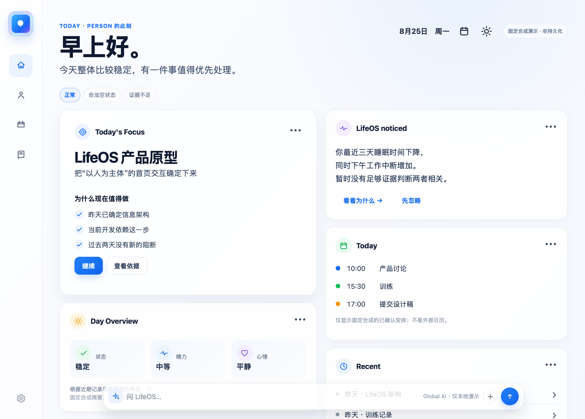
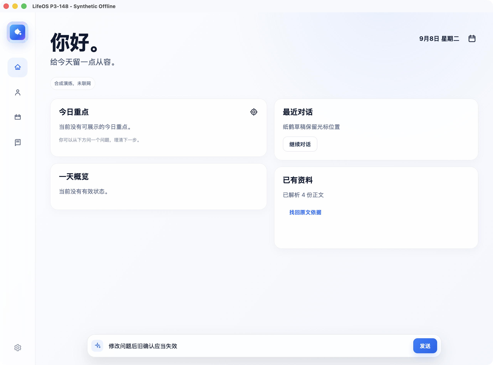
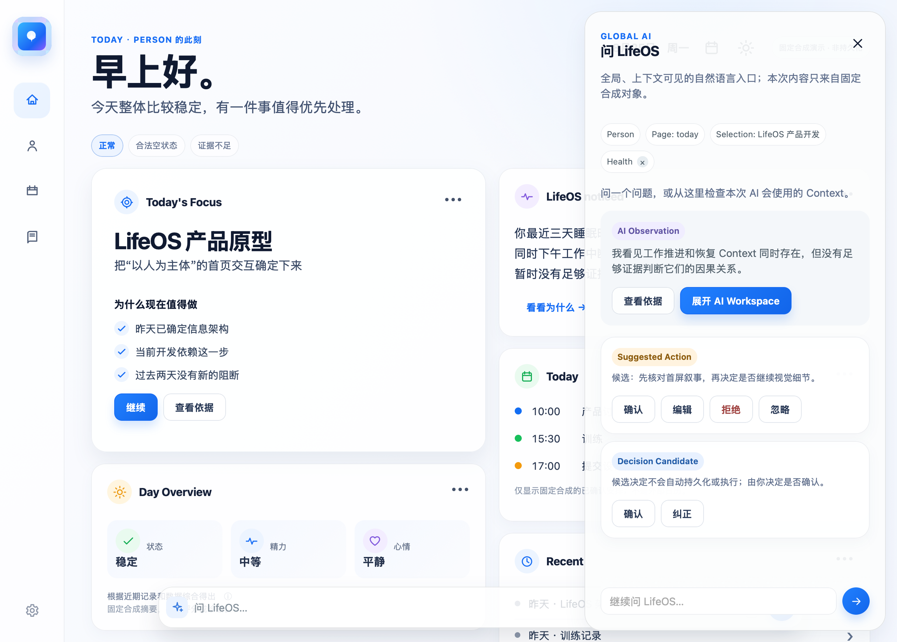
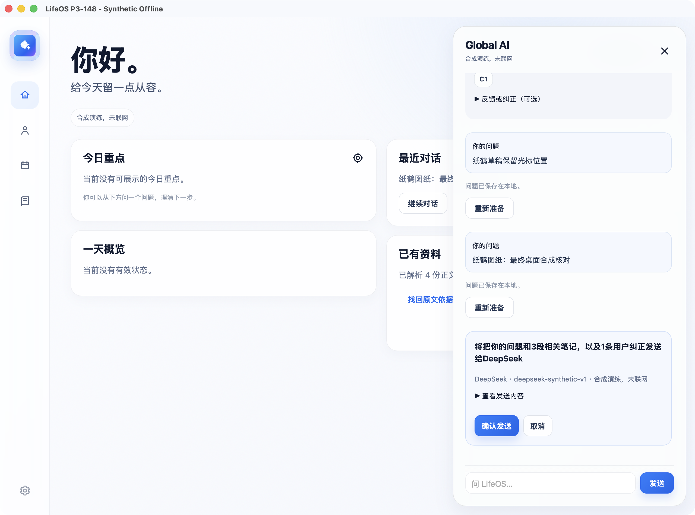
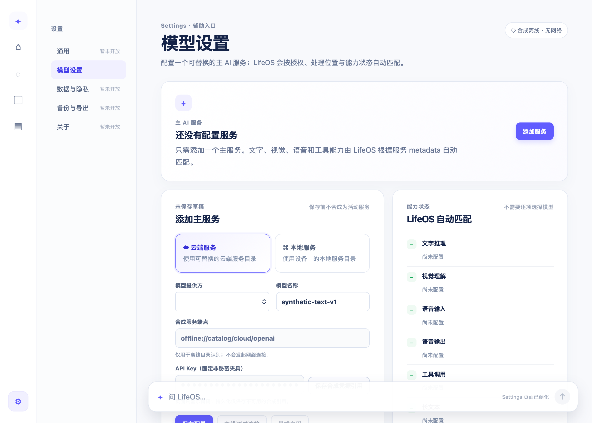
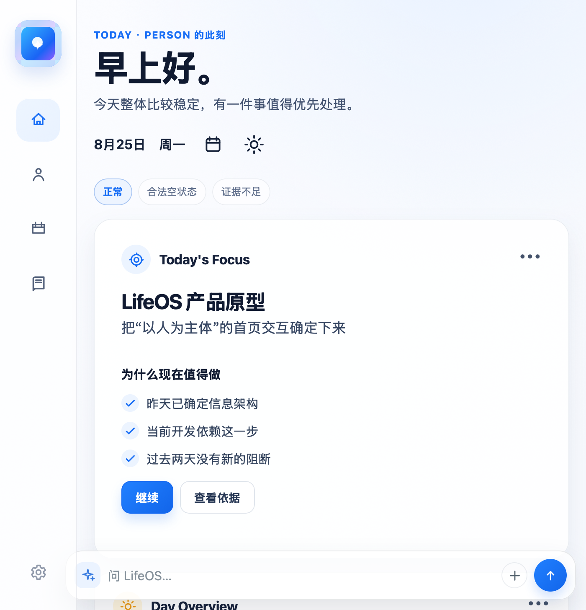
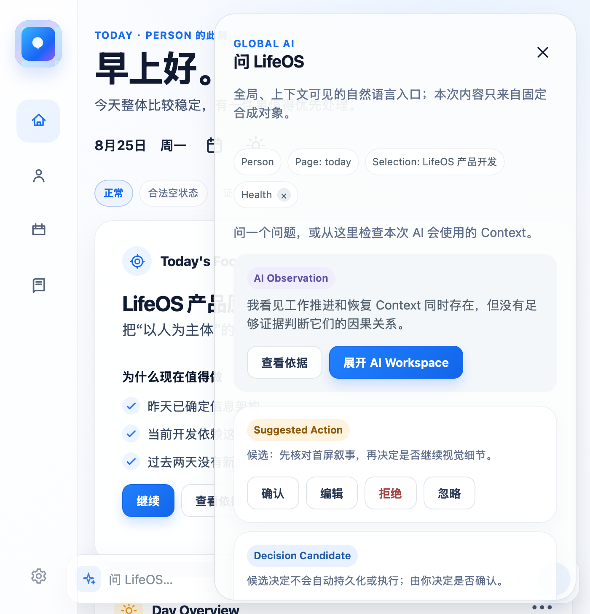
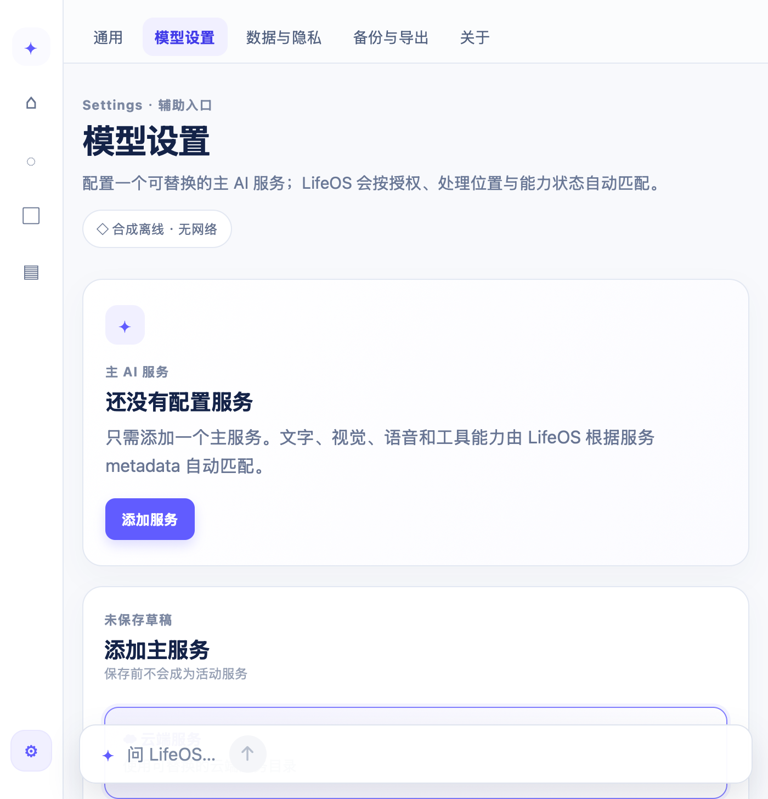
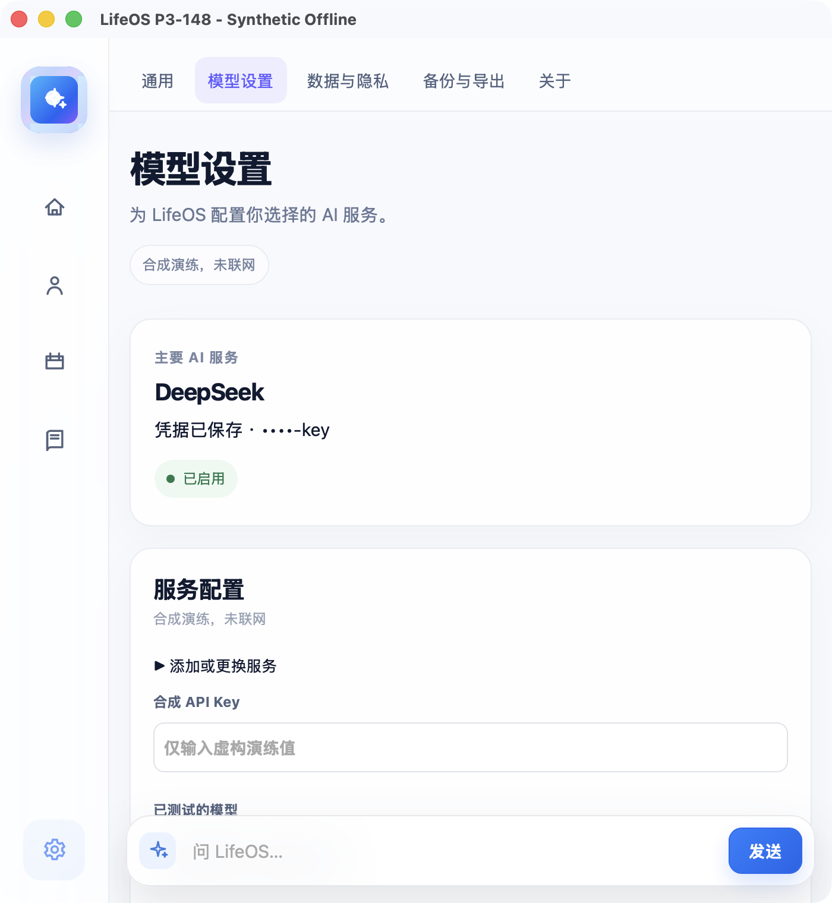

左：P3-116 整体设计或 P3-142 模型设置的纯合成参考渲染。右：当前 P3-148 合成 actual Tauri。内容区按同一尺寸展示：桌面1280×917，窄屏700×728；App原生窗口另含32px标题栏，分别1280×949和700×760。此页仅以CSS隐藏标题栏用于比较，原截图保持不变。
比较布局、层级和可达性，不比较示例文案，不宣称逐像素一致。116 的示例健康/Focus、142 的模拟能力不会进入148。当前148保持固定已有会话、受控DeepSeek及诚实空状态。








